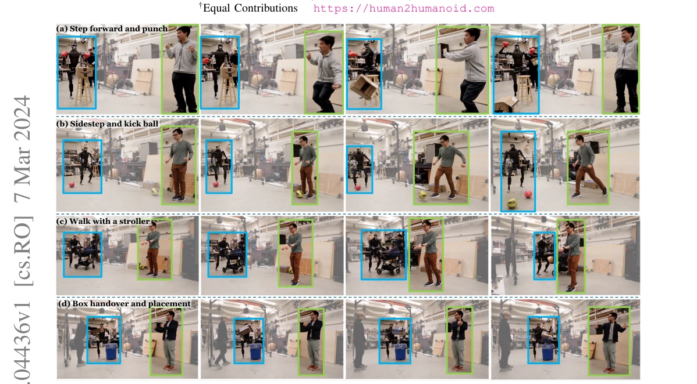
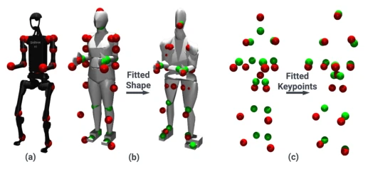
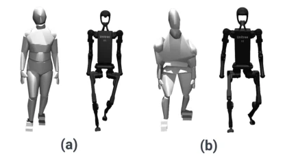
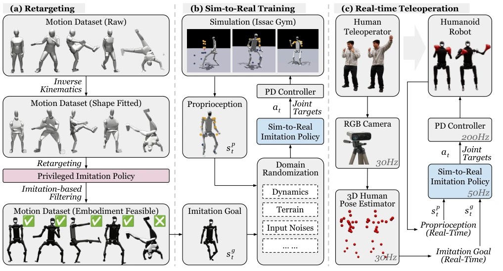
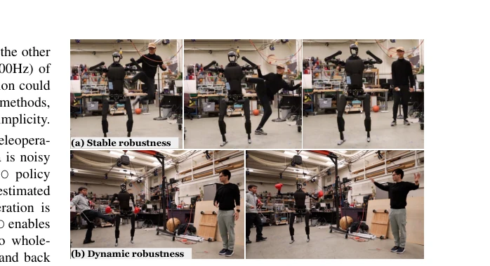
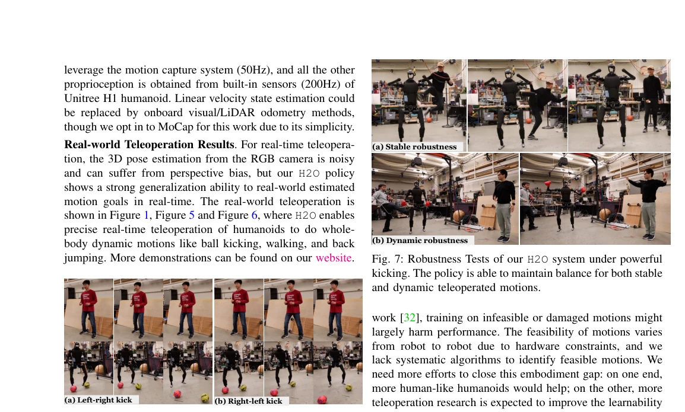
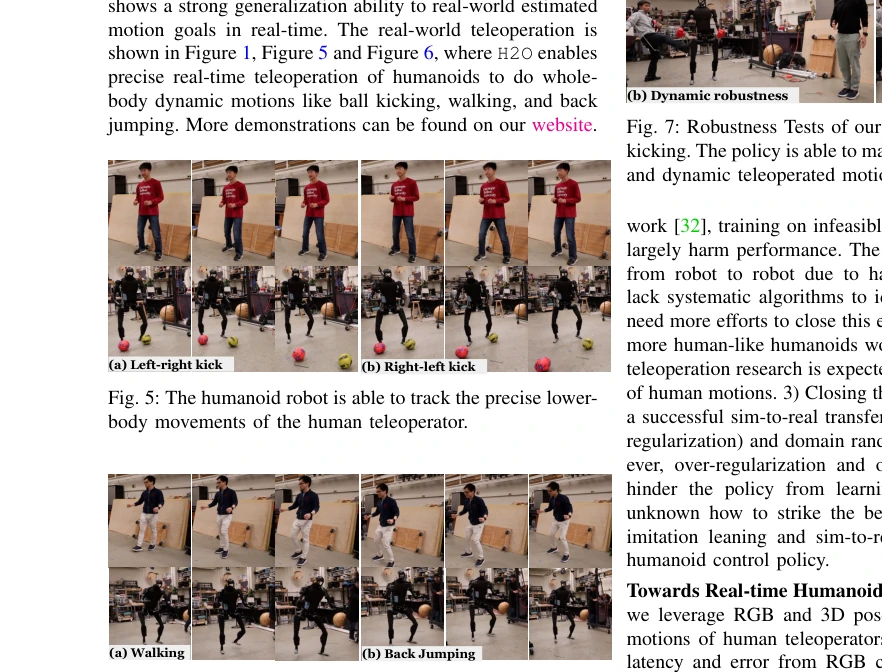

This paper claims to control the full body of a humanoid robot in real-time using only RGB cameras, which sounds like equipping the robot with 'X-ray vision'. The H2O framework is indeed impressive; without motion capture suits, relying solely on cameras, it enables the Unitree H1 to kick legs and push strollers. But do not get too excited too soon; the core lies in the 'sim-to-data' cleaning process, which essentially relies on privileged information (privileged info) in simulation to filter out actions that the robot cannot perform at all. This counts as a clever engineering trick, but it also exposes the limitations of pure visual input—what works in simulation still requires massive domain randomization to withstand on real hardware. Moreover, this is essentially teleoperation, not autonomous; the latency and errors of the human operator are directly transmitted to the robot, and the so-called 'real-time' is actually limited by the noise of the pose estimator. Overall, it is an impressive demonstration of RL in humanoid control, but there is still a distance from true 'generalization', after all, the robot still has to listen to human commands and cannot figure things out on its own.
Real-time full-body teleoperation of humanoid robots is a long-standing problem. Existing methods either rely on expensive force sensors or exoskeletons [8, 9], or simplify models for computational efficiency, resulting in limited dynamic motion capabilities [6, 10, 11]. Although RL performs well in simulation [15, 18], direct transfer to real hardware is difficult, and there is a lack of large-scale feasible motion datasets for humanoid robots. Directly retargeting human motions often produces trajectories that the robot cannot execute (such as steps that are too large) [23-25]. This paper aims to solve these problems, using RGB cameras to achieve low-cost, real-time full-body teleoperation, while solving the problem of infeasible actions caused by dynamics differences through data cleaning, paving the way for large-scale data collection and autonomous training [2, 4].

Fig. 1: The humanoid robot is teleoperated in real-time using an RGB camera by the human teleoperator. (a) The humanoid mimics the human teleoperator, advancing one step while delivering a punch to displace a box, followed by a victory gesture. (b) The humanoid executes a precise sidestep to align with a ball and delivers a controlled kick using its right foot. (c) The humanoid demonstrates forward walking while pushing a stroller. (d) The operator teleoperates the humanoid to catch a box, rotate its waist, and drop the box into a waste bin. Videos: see the website.
The overall process is divided into three steps. First is motion retargeting and cleaning (Sim-to-Data): using the SMPL model to fit the humanoid structure, retargeting the AMASS dataset to the H1 robot via inverse kinematics, but human motions may not be feasible. To this end, an imitation policy with privileged state is trained to filter out action sequences that cannot be tracked in simulation, obtaining a clean dataset [32]. Second is RL policy training: training an imitation policy based on RGB visible states (keypoint positions) in simulation, using the PPO algorithm, combined with extensive domain randomization (friction, mass, terrain, etc.) to narrow the sim-to-real gap [19, 58]. The reward function includes penalties, regularization, and task rewards to ensure full-body tracking accuracy. Finally is real-time deployment: using RGB cameras and HybrIK to estimate human pose as the target state, the policy outputs joint targets, executed via PD controller. The key innovations lie in using the privileged policy to clean data, and designing a state space relying only on visually visible information, achieving zero-shot transfer from simulation to real hardware.

Fig. 2: Fitting the SMPL body to the H1 humanoid. (a) Visu- alization of the humanoid keypoints (red dots) (b) Humanoid keypoints vs SMPL keypoints (green dots and mesh) before and after fitted SMPL shape β′. (c) Corresponding 12 joint position before and after fitting.

Fig. 3: Effect of using a fitted SMPL shape β′ instead of mean body shape on position-based retargeting. (a) Retargt- ing without using β′, which results in unstable “in-toed” humanoid motion. (b) Retargeting using β′, which result in balanced humanoid motion.

Fig. 4: Overview of H2O: (a) Retargeting (Section IV): H2O first aligns the SMPL body model to a humanoid’s structure by optimizing shape parameters. Then H2O retargets and removes the infeasible motions using a trained privileged imitation policy, producing a clean motion dataset. (b) Sim-to-Real Training: (Section V) An imitation policy is trained to track motion goals sampled from a cleaned dataset. (c) Real-time Teleoperation Deployment (Section VI-B): The real-time teleoperation deployment captures human motion through an RGB camera and a pose estimator, which is then mimicked by a humanoid robot using the trained sim-to-real imitation policy.
In the simulation stage, testing is conducted on the AMASS dataset before and after cleaning, comparing Privileged Policy and H2O variants. H2O significantly outperforms the no-cleaning version (67.9%) and the simplified state version (53.2%) in success rate (72.5%) and error metrics, proving the importance of data cleaning and state design. Ablation studies show that the larger the training data volume, the better the effect, but even with small amounts of data combined with strong domain randomization, decent results can be achieved. Real robot experiments demonstrate that the H1 robot can real-time imitate human full-body actions such as kicking legs, backflips, pushing strollers, and possesses anti-interference robustness. However, real robot performance is limited by visual estimation noise, and complex interaction tasks are not involved.

Fig. 7: Robustness Tests of our H2O system under powerful kicking. The policy is able to maintain balance for both stable and dynamic teleoperated motions.

Fig. 5: The humanoid robot is able to track the precise lower- body movements of the human teleoperator.

Fig. 6: The humanoid robot is able to track walking motions of human-style pace and imitate continuous back jumping.